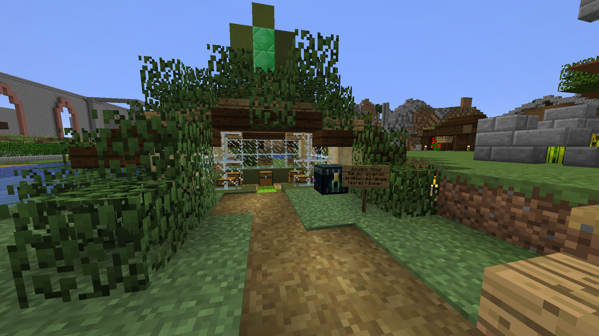

Jacobs affärer

Jacob har en huvudaffär som ligger precis utanför hans hus. Det är en liten affär som säljer diverse artiklar. Han sålde is, shulker boxes, elytra, tridents, totems of undying, olika armordelar och verktyg från endstäder och mendingböcker. Jacobs affär
Mendingböckerna fick han från sin andra affär, en samling Librarians i hans källare (zooma ut med ctrl+scroll för att se bilden). Dessa Librarians fick allmänheten byta med, dock endast med emeralder köpta från Jacobs automat. Mendingböckerna fick man inte byta till sig själv, de kunde endast köpas från affären.
Jacob påbörjade en tredje affär, en stor whiteboard där folk skulle kunna köpa ullblock för att placera ut på den vita kartan. Norr om Rasmus hus ligger därför en 128x128 stor platta av vit ull. För att fixa detta byggde Jacob en ullfarm som ligger söderut från hans hus.